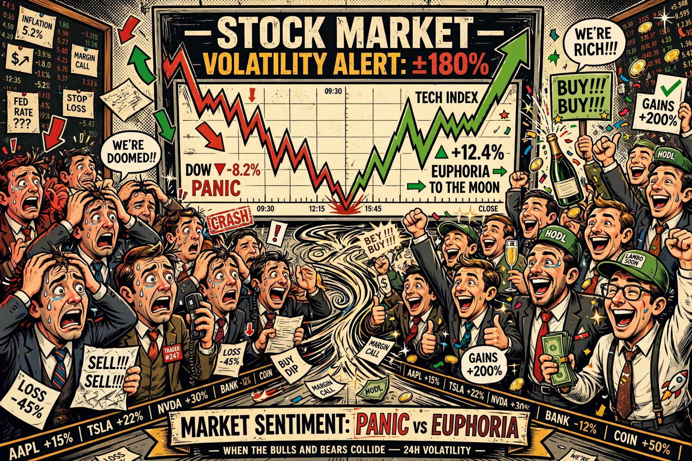

Behavioral finance

Behavioral finance is the study of how psychological influences and cognitive biases affect the financial behaviour of investors and the operation of financial markets. It challenges the standard assumptions of rational agents and efficient markets, drawing on experiments by psychologists such as Daniel Kahneman and Amos Tversky and on economists including Robert Shiller and Richard Thaler.
| Key figures | Daniel Kahneman, Amos Tversky, Robert Shiller, Richard Thaler, Werner De Bondt |
|---|---|
| Core concepts | Loss aversion, overconfidence, herding, anchoring, mental accounting |
| Key works | Prospect theory (1979); Irrational Exuberance (2000); Nudge (2008) |
Foundations
Prospect theory (1979) showed that people evaluate outcomes relative to a reference point, are risk-averse for gains and risk-seeking for losses, and weight losses more heavily than equivalent gains (loss aversion). Documented heuristics and biases include overconfidence, representativeness, availability, anchoring, framing effects, mental accounting, and the disposition effect — the tendency to sell winning investments too early and hold losers too long.
Market implications
Behavioral finance seeks to explain market anomalies that efficient-market theory handles poorly: excess volatility, momentum and value effects, post-earnings-announcement drift, speculative bubbles and crashes, and the equity premium puzzle. Because arbitrage is risky and costly ("limits of arbitrage"), mispricing can persist even when some traders recognise it.
Applications and criticism
The field informs retirement-plan design (automatic enrolment and escalation of contributions), investor education, and regulation of disclosure. Critics, notably Eugene Fama, argue that anomalies are scattered, often offsetting, and may reflect data mining or rational risk factors — a debate recognised when Shiller and Fama shared the 2013 Nobel Memorial Prize in Economics.